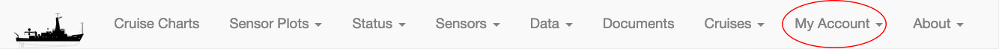

User Account Page
At present, most of the CORIOLIX web user interface is available for unauthenticated anonymous users. However, some core functionality is restricted to named local users who must first register for an account, then login to gain access to the restricted content.
Restricted content:
Restricted content under each CORIOLIX navigation heading include:
- Cruise Charts - logged in users may save custom user draws routes
- Sensor Plots - there are no restricted items under this heading
- Status - there are no restricted items under this heading
- Sensors
- Add/Modify - add new sensors or make edits to sensor configurations
- Sensor Logs - view, edit, or download sensor specific logfiles*
- Vendors - view or edit sensor vendor metadata*
- Data - there are no restricted items under this heading
- Documents
- Edit - upload or change document metadata
- Cruises
- Add New Cruise - edit cruise level metadata
- Event Log - view, create, or download events & event log
- My Account
- My Profile - edit your account settings
- My Alerts - configure your alerts
- Change My Password - reset your password
- About - there are no restricted items under this heading.
User scope:
Currently, accounts are managed on a per-vessel basis. That means that we do not yet synchronize your account across the various CORIOLIX vessel specific deployments. So, if you want to use more on CORIOLIX user interface, Endeavor and Oceanus for example, you will need to create an account on both systems.
We do synchronize account information between the ship side CORIOLIX installation and the shoreside CORIOLIX installation. So, you only need to have one account per vessel. You will use the same username and password for accessing CORIOLIX on the ship as you would on the shore.
Creating an account for the first time:
Browse to the CORIOLIX site relative to the vessel you are interested in:
- https://coriolix.ceoas.oregonstate.edu/oceanus
- https://coriolix.ceoas.oregonstate.edu/endeavor
From the site navigation options select: My Account > Create New Account Complete the User Profile setup form and select the Submit button.